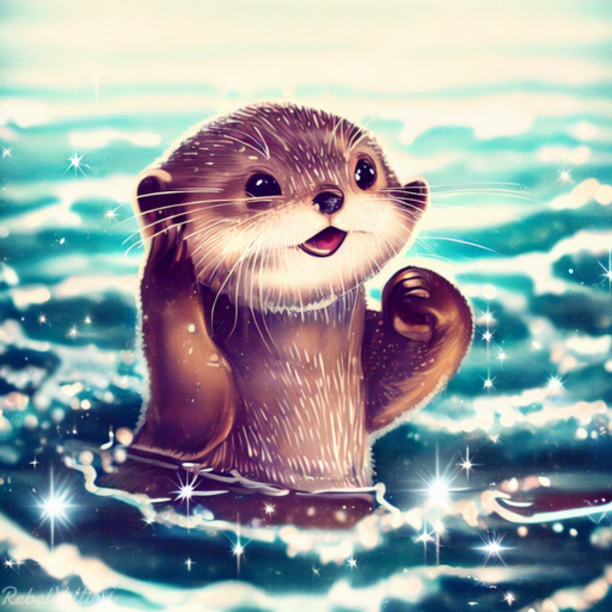
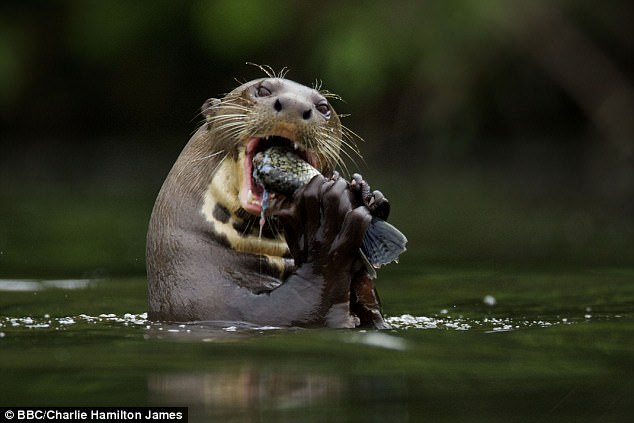
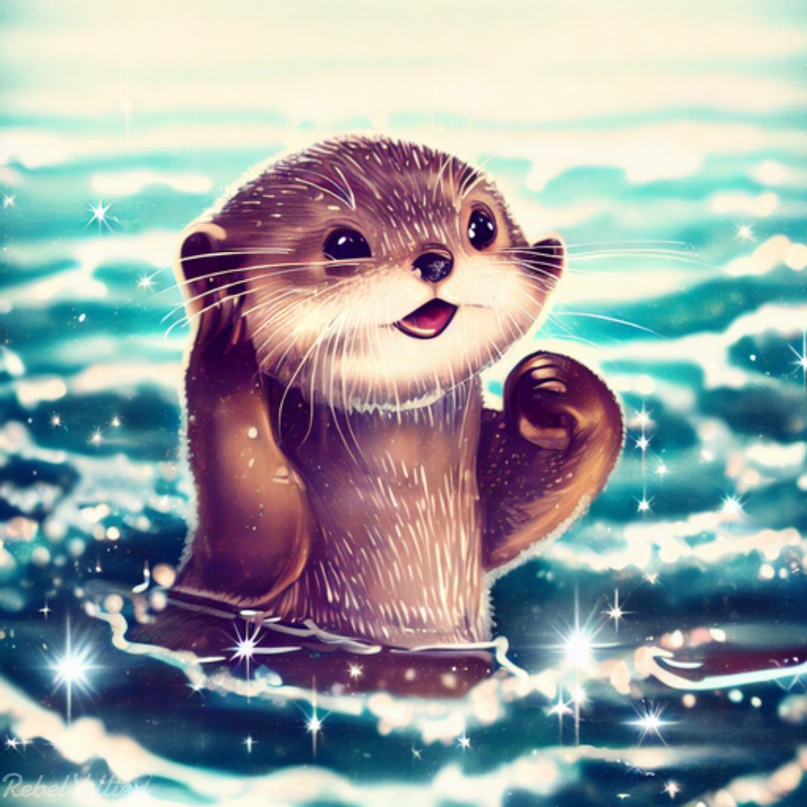
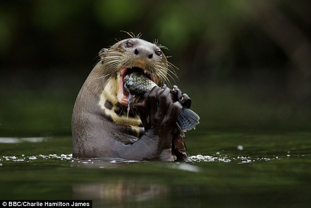
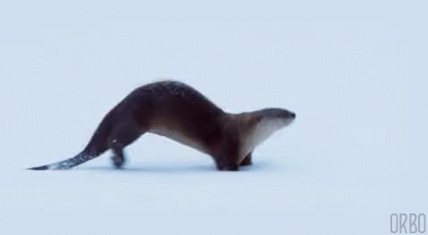
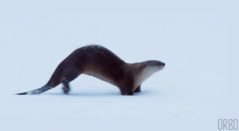
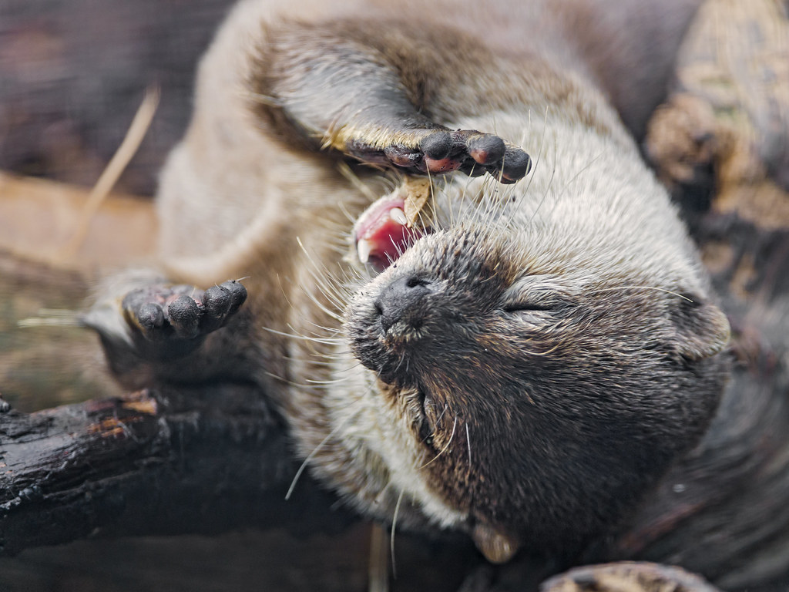
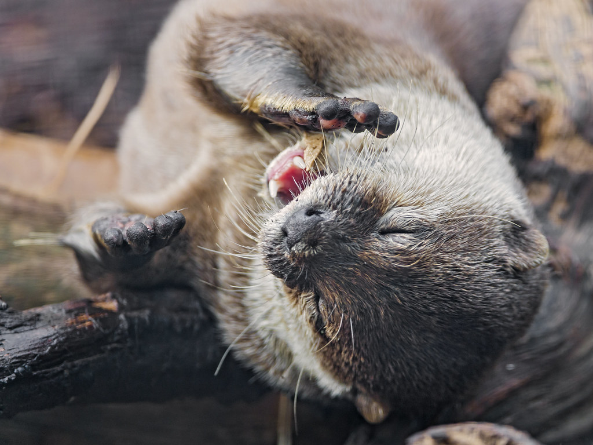

Lahe fakt!!!!
Saarmad on nii kohevad, neil on tõepoolest imetajatest kõige paksem karv!
Levila
Saarma levila on väga lai, hõlmates peaaegu kogu Euraasia. Araabia poolsaarel on tema jaoks liiga kuiv ja Euraasia põhjaosa jällegi liiga külm.
Eestis elab saarmas kõikjal mandril ning Saaremaal, Hiiumaal ja Vormsi vetes. Eestis elab viimaste andmete põhjal ligi 2000 isendit.
Välimus
Saarmas on saleda ja pikliku kehaga imetajatest kiskjad, kellel on lühikesed jäsemed ja pikk jäme saba. Karvkate on värvuselt pruun, seljapool tumedam kõhupool heledam.
Toidulaud
Enamasti on saarmas aktiivne öösel või hämaral ajal. Ühe öö jahiretked võivad olla 3-10 km pikad. Nende lemmiktoiduks on kahekaiksed ja kalad, kuid mingil määral sööb ka närilisi või isegi linnupoegi.
Elupaik
Varjumiseks kasutab saarmas urgusid. Need asuvad enamasti kaldas ja urusuu avaneb sageli vee alla - sellisel juhul on pesakambri laes õhuauk. Ühel saarmal võib olla mitu puhke- ja varjepaika.
HEAR DA OTTERS
SCREECH
AGITATED
SQUEEKING
CALLING

 

 
